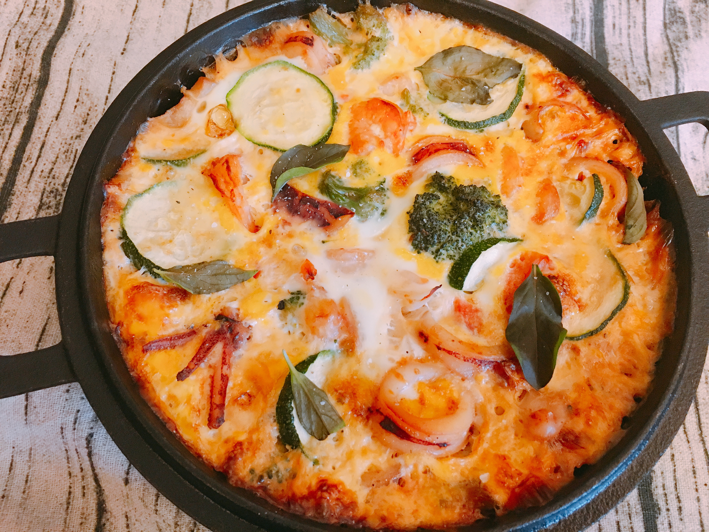
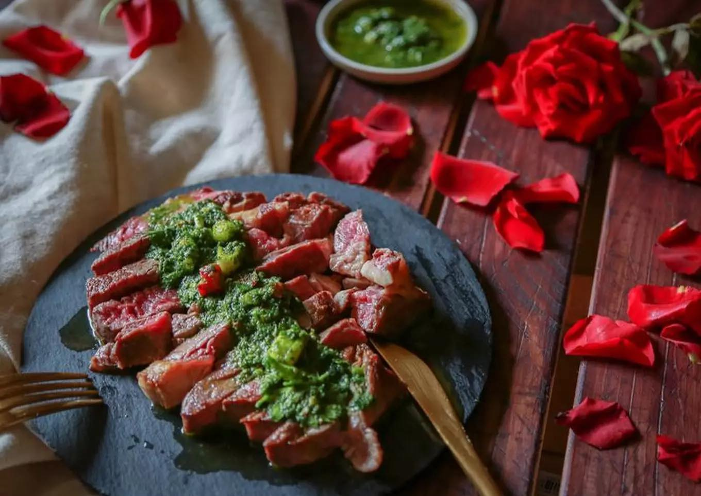
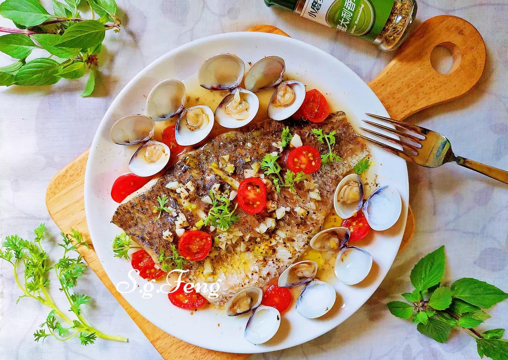

食材:明蝦(2尾)、干貝(2粒)、培根(2片)、白酒(2cc)、低筋麵粉(30公克)、沙拉油(20cc)、燉蔬菜(適量)、白蘭地(10cc)
調味"德式芥茉醬":奶油(10公克)、白葡萄酒(100cc)、鮮奶油(60cc)、胡椒鹽(少許)、紅蔥頭(30公克)、魚高湯(300cc)、芥末籽醬(20公克)
一:培根片切半，包裹干貝，為培根干貝卷。
二:明蝦去頭，剝殼，切背。
三:將培根干貝捲鑲入明蝦的背中，用2支竹籤固定住，為明蝦捲。
四:明蝦捲以白酒及胡椒鹽醃過，再沾裹薄薄一層的麵粉。
五:取一鍋，倒入沙拉油，加熱後，將沾有薄麵粉的明蝦捲的兩面煎至金黃。
六:再倒入少許白蘭地，入烤箱以250度烤約3分鐘，取出後，拔掉竹籤。
七:取鍋放入奶油、紅蔥頭炒軟後，倒入白酒，煮至濃縮為1/2量；再倒入魚高湯煮至濃縮1/2量。
八:濃縮後加入鮮奶油拌煮至收汁，過濾掉紅蔥頭，放入芥茉籽醬，略煮後撒胡椒鹽，就是德式芥茉籽醬囉。
"以上結束後就可以享用一道美味的燻肉明蝦鑲干貝奶油芥茉醬佐燉蔬菜囉"!!!
 第一道西班牙海鮮烘蛋  第三道西式香草青醬佐牛排
 第四道義式香草蒸鱸魚